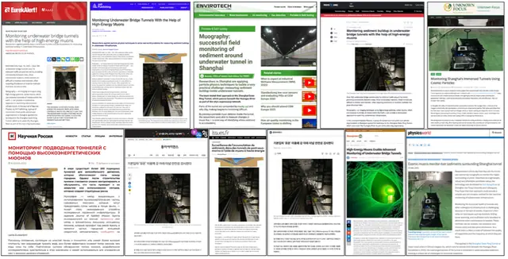
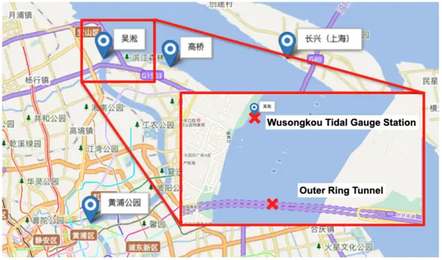
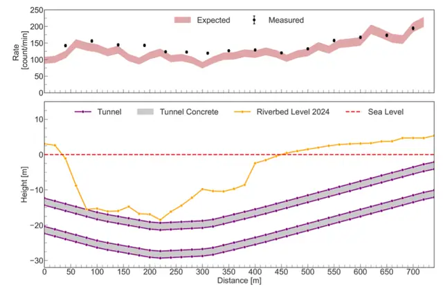
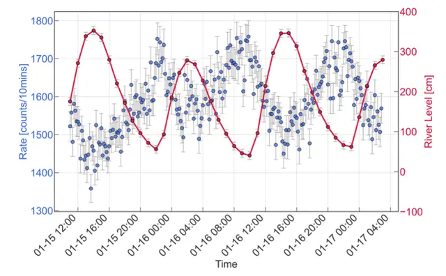

We are thrilled to announce that our latest research paper, “Towards Non-Invasive Sediment Monitoring Using Muography: A Pilot Run at the Shanghai Outer Ring Tunnel,” has been published in the Journal of Applied Physics (Vol. 138, 114902, 2025). 📄 Read the paper here (preprint: arXiv:2504.00582)
This study marks an important milestone in applying cosmic-ray muography to civil and environmental engineering. Using a portable dual-layer plastic scintillator detector, our team conducted muon flux scans inside the Shanghai Outer Ring Tunnel—an immersed tunnel beneath the Huangpu River—to study sediment accumulation and tidal effects without disrupting tunnel operation.
Combining Geant4 simulations with field measurements, we demonstrated a clear anti-correlation between muon flux and tidal water level, confirming muography’s sensitivity to subtle overburden changes caused by sediment and water variations. These results validate muography as a non-invasive, real-time monitoring technique for submerged infrastructure, offering a safer and more sustainable alternative to traditional geotechnical methods like borehole drilling or sonar scanning.
This collaboration among Shanghai Jiao Tong University, Shanghai Geological Engineering Exploration, and several municipal partners highlights how particle physics technologies can play a transformative role in urban infrastructure resilience and environmental monitoring.








我们很高兴地宣布，课题组最新研究论文《利用缪子成像实现非侵入式泥沙监测：上海外环隧道先导试验》（Towards Non-Invasive Sediment Monitoring Using Muography: A Pilot Run at the Shanghai Outer Ring Tunnel）已发表于Journal of Applied Physics（第138卷，114902，2025年）。📄 点此阅读论文（预印本：arXiv:2504.00582）
这项研究是将宇宙线缪子成像应用于土木与环境工程的重要里程碑。课题组利用便携式双层塑料闪烁体探测器，在黄浦江下的沉管隧道——上海外环隧道内开展缪子通量扫描，在不影响隧道运营的情况下研究泥沙淤积与潮汐效应。
结合Geant4模拟与现场测量，我们观测到缪子通量与潮位之间明显的反相关，证实了缪子成像对泥沙和水位变化所引起的上覆物质细微变化的灵敏度。这些结果验证了缪子成像作为水下基础设施非侵入式实时监测技术的可行性，为钻孔、声呐扫描等传统岩土工程方法提供了更安全、更可持续的替代方案。
本研究由上海交通大学、上海市地矿工程勘察（集团）有限公司及多家市属单位合作完成，彰显了粒子物理技术在城市基础设施韧性和环境监测中的变革性作用。